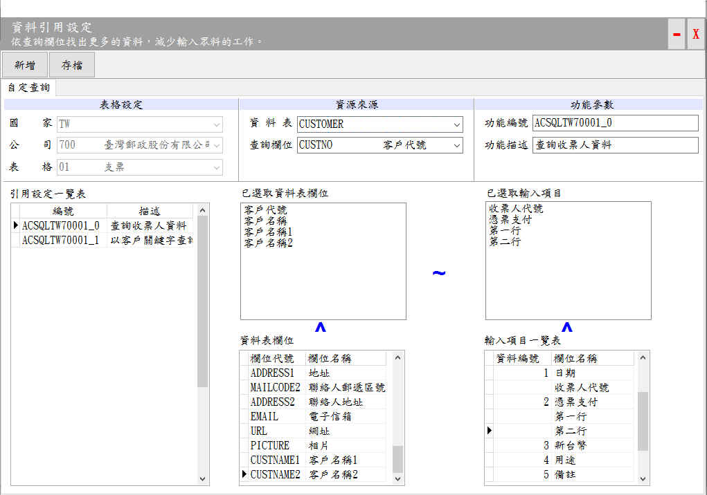

資料引用設定
資料引用設定可以設計資料查詢功能，例如以客戶代號或關鍵字取得客戶的相關資料，以簡化套印資料輸入的工作。如果以客代號進行查詢，而找不到資料時，系統會於套印後新增該筆資料，以供下次查詢時取用。

資料引用設定視窗
基本操作說明：
- 指定資料表為「CUSTOMER」，並指定查詢欄位為「CUSTNO 客戶代號」。
- 點選「 新增」按鈕後，請於「功能描述」輸入功能說明「查詢收票人資料」。
- 編輯及管理「已選取資料表欄位」、「已選取輸入項目」：
- 數量必需一致，列如各4個。
- 重設：將「已選取資料表欄位」及「已選取輸入項目」的資料清空。
- 加入：如果在「輸入項目一覽表」某個項目上面，用滑鼠左鍵快點2下, 即可將該項目加入至「已選取輸入項目」中。
- 刪除：如果要刪除「已選取資料表欄位」，請用滑鼠左鍵在該項目用滑鼠左鍵快點2下即可刪除。
- 調整順序：如果要調整「已選取輸入項目」內容之順序，請在該項目上面，用滑鼠左鍵按住該項目後，直接托曳至適當位置即可。
- 存檔：設定完成後，請按存檔以便儲存相關設定。
功能說明
- 引用設定一覽表：由引用設定一覽表顯示此表格目前共設計了「查詢收票人資料」及「以客戶關鍵字查詢」等2項查詢功能。
- 資料表欄位：其項目會依據「資料表」(CUSTOMER客戶、 ACCOUNT套印者)的不同，其顯示的欄位系依據被選取的資料表。
- 輸入項目一覽表：其項目系依據資料輸入設定視窗的內容所產生。